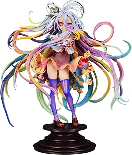

A WORLD BUILT FROM GAMES
No Game No Life turns competition into the operating system of its fantasy world. Sora and Shiro are NEETs and hikikomoris in ordinary life, but online they are known as an undefeated pair of genius gamers. When Teto brings them into a world where disputes are settled through games, their unusual talents become socially valuable. The premise is immediately playful because it replaces familiar fantasy violence with rules, wagers, bluffing, and psychological pressure. Every contest asks the siblings to understand the game and the opponent who believes they can win. The bright presentation makes the world feel theatrical, while the underlying stakes can become surprisingly serious. Strategy is treated as performance, deduction, and emotional reading at the same time. That combination gives the series a rhythm unlike a conventional adventure show. It is not enough to know the rules; the characters must understand how people will bend them. The result is a story that makes intelligence visually exciting.
THE SIBLING DYNAMIC
The emotional centre is the partnership between Sora and Shiro. Their strengths are different, but their confidence comes from functioning as a pair. Sora understands people and performance, while Shiro reads systems with remarkable precision. Their dependence on one another is both the source of their power and a point of vulnerability. This makes the sibling relationship more interesting than a simple genius duo. The story can be funny, arrogant, and deliberately excessive, but it also reveals how frightening the wider world feels when the two are separated. That tension keeps the games from becoming empty puzzles. Their victories matter because they are also attempts to create a place where they belong. The colourful world gives their confidence somewhere to clash with unfamiliar cultures and powerful opponents. The show’s strongest scenes understand that winning is not always the same as feeling safe.
FINAL VERDICT
No Game No Life remains a strong recommendation for viewers who enjoy strategy, fantasy spectacle, and characters who win through observation rather than brute force. Its visual identity is bold and its premise is easy to remember. The series is energetic, clever, and comfortable with exaggerated presentation. It also benefits from a cast that treats every challenge as both a puzzle and a performance. Viewers should know that the Crunchyroll listing currently states that the show’s videos are not available there, so the current legal platform should be verified by region before watching. That availability note is precisely why a review page should separate editorial opinion from viewing guidance. As a piece of anime design, No Game No Life still has a distinct personality. As a story, it is most rewarding when the games reveal the emotional dependence beneath the bravado.
MERCH SIGNALS
Five different Amazon recommendations are grouped as collectibles. Prices and availability can change.
 Category: character collectible · themed/relatedShiro 1/7 PVC figure$75.99
Category: character collectible · themed/relatedShiro 1/7 PVC figure$75.99 Category: character collectible · themed/relatedGood Smile collectible$49.99
Category: character collectible · themed/relatedGood Smile collectible$49.99 Category: character collectible · themed/relatedGood Smile collectible$50.41
Category: character collectible · themed/relatedGood Smile collectible$50.41 Category: character collectible · themed/relatedGood Smile collectible$30.98
Category: character collectible · themed/relatedGood Smile collectible$30.98 Category: character collectible · themed/relatedGood Smile collectible$29.00
Category: character collectible · themed/relatedGood Smile collectible$29.00AMAZON MERCH
Amazon search for No Game No Life. No exact product is asserted here unless an item is shown with evidence on this page. Search Amazon →
Affiliate disclosure: links use the Amazon Associates tag priscadezigns-20. Prices, stock, licensing, and availability can change; verify the current listing before purchasing.